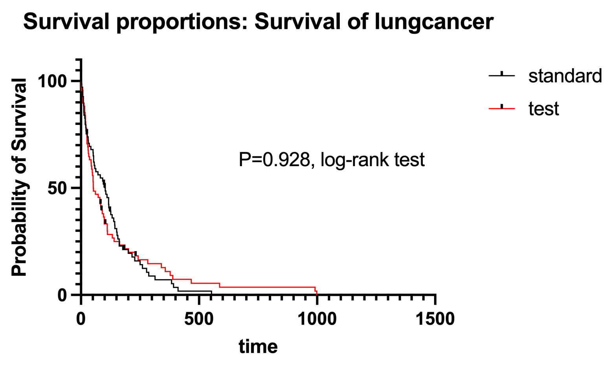

The Veterans’ Administration Lung Cancer study is a randomized trial comparing two treatment regimens for lung cancer. The dataset contains information on treatment type (standard vs. test), survival time, and censoring status. This dataset is ideal for conducting a survival analysis to explore the impact of the treatments on survival outcomes. Please perform a survival analysis by using the variables “trt” and “time” from the dataset, and then explore the relationship between “trt” and “time” to understand how the treatments affect survival rates. Please interpret your survival analysis result.
You can download the dataset HERE.

Based on the survival analysis, there is no significant difference in survival between the standard and test treatments, but the median survival time and hazard ratios suggest a potential benefit of the standard treatment in terms of longer survival. However, these observations are not statistically significant, so further investigation may be needed.
In addition to the interpretation, we can also check the following information according to the Prism Graphpad analysis result:
The log-rank and Gehan-Breslow-Wilcoxon tests both show non-significant p-values (p > 0.05), indicating that there is no statistically significant difference between the survival curves of the standard and test treatments.
The median survival time for the standard treatment is approximately 103.0 units, while for the test treatment, it is approximately 52.50 units. The ratio of median survival between the two treatments is 1.962, with a 95% confidence interval of 1.387 to 2.774. This suggests that the standard treatment shows longer median survival compared to the test treatment.
The hazard ratios (both Mantel-Haenszel and log-rank methods) also indicate that the risk of an event (e.g., death) for the standard treatment is slightly lower than the test treatment. However, the confidence intervals for these hazard ratios include 1, indicating that the difference is not statistically significant.
You will perform a multiple logistic regression analysis using Prism GraphPad to examine the factors influencing graduate school admissions.
You can download the data HERE.
The dataset contains applicants’ GRE scores, GPA, and undergraduate institute rank, with an ‘admit’ variable indicating admission status.
admit: 1 = Yes, 0 = Nogre: GRE score (200-800)gpa: GPA (out of 4.0)rank: Rank of undergraduate institute (1: highest
prestige - 4: lowest)Please build the logistic regression model with admit as
the dependent variable and gre, gpa, and
rank (reference group=4) as predictors. Interpret the
coefficients.
- Intercept (\(\beta_0\)):
The odds ratio for the intercept is 0.003921. This means that when all predictor variables (GRE, GPA, and rank) are zero, the odds of admission are approximately 0.39% (0.003921 * 100%) of being admitted to the graduate program.
The intercept value of -5.541 represents the log odds of admission when all predictor variables (GRE, GPA, and rank) are zero. However, since it is unlikely for applicants to have zero GRE scores, GPAs, or rank, the intercept’s practical interpretation might not be meaningful in this context.
- GRE (\(\beta_1\)):
The odds ratio for GRE is 1.002. For every one-unit increase in GRE score, the odds of admission increase by approximately 0.2% (1.002 * 100%).
This effect is relatively small, suggesting that GRE scores have a minor impact on the likelihood of admission.
-GPA (\(\beta_2\)):
The odds ratio for GPA is 2.235.
A one-unit increase in GPA results in a substantial 123.5% increase in the odds of admission. GPA appears to be a significant predictor, strongly influencing the chances of being admitted to the graduate program.
- Rank[3] (\(\beta_3\)):
The odds ratio for the 3rd highest prestige undergraduate institute (Rank[3]) is 1.235. This indicates that applicants from the 3rd highest ranked undergraduate institutions have approximately 23.5% higher odds of being admitted. However, the confidence interval includes zero, indicating that this effect is not statistically significant.
- Rank[1] (\(\beta_4\)):
The odds ratio for the 1st highest prestige undergraduate institute (Rank[1]) is 4.718. Applicants from the 1st highest ranked undergraduate institutions have approximately 371.8% higher odds of being admitted compared to applicants from lower-ranked institutions.
This suggests that applicants from the most prestigious undergraduate institutions have a significantly higher likelihood of being admitted to the graduate program.
- Rank[2] (\(\beta_5\)):
The odds ratio for the 2nd highest prestige undergraduate institute (Rank[2]) is 2.401.
The rank of the 2nd highest prestige undergraduate institute is associated with a 140.1% increase in the odds of admission. This indicates that applicants from the second-highest ranked institutions also have a higher chance of being admitted compared to those from lower-ranked institutions.
Overall, a higher GPA is strongly associated with increased odds of admission, and applicants from the 1st and 2nd highest prestige undergraduate institutions have significantly higher admission probabilities. However, the effect of GRE and rank[3] is comparatively smaller and may not be statistically significant in the case of rank[3].